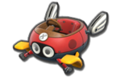
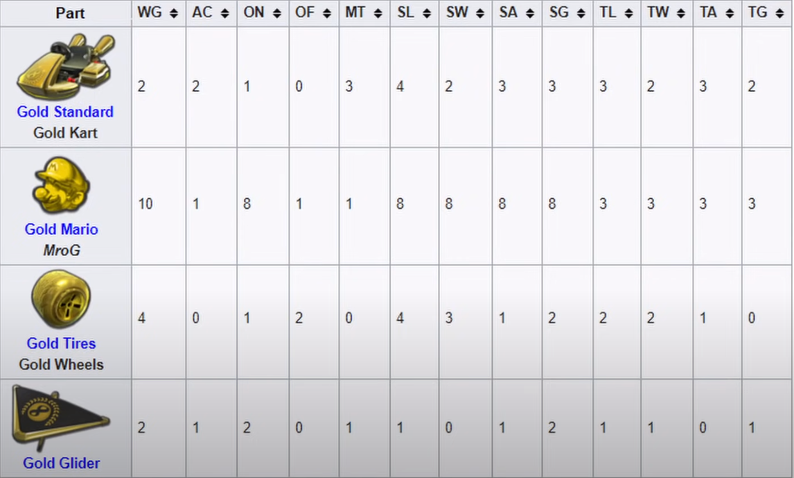
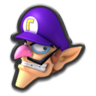
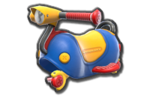
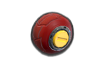
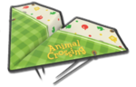
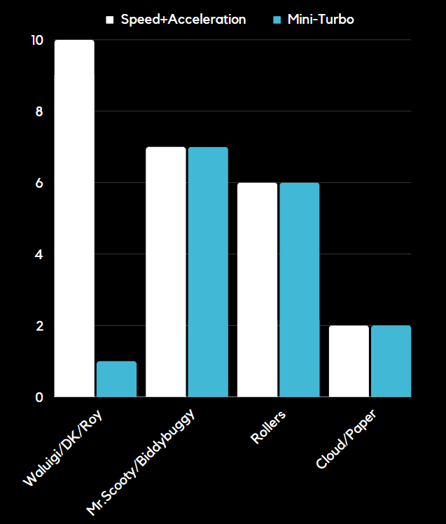

Welcome to the exhilarating world of online Mario Kart 8 Deluxe! Whether you're a seasoned MK8 Deluxe veteran or it's your first time attempting to climb the ladder, every Mario Kart racer has asked themselves, 'What is the best kart combo, and how can I find it?' Luckily for you, I've discovered the most optimal combination that gives you a slight edge on the 150CC online ladder. This guide will cover how we scientifically calculated the best combination through analysis. So, rev those engines and let’s get geeky with the stats to find your unbeatable combination!
In order to find the best combination, we'll examine the stats of each character, kart, and tire independently using fan-compiled data. We're relying on fan-compiled data because some of our kart's stats are hidden in-game.
Although each part has seven different attributes (Weight, Acceleration, Traction, Handling, Speed, Mini-Turbo, and Invincibility), we'll only focus on optimizing Speed, Acceleration, and Mini-Turbo. These three stats determine how fast we can complete any given online race.
Speed: Determines the maximum velocity our kart can achieve. This allows us to complete tracks faster and create break-aways quickly.
Acceleration: Determines how rapidly our kart can reach its maximum velocity. This lets us recover to top speed after getting hit with items.
Mini-Turbo: Determines both the speed of charging a boost from drifting and the duration of that boost. Mini-Turbo allows us to re-accelerate after each turn
Before we can start doing calculations to find the best combination, it's essential to understand how the game stores and utilizes statistics
In MK8DX, each component of a build—Character, Kart, Tires, and Glider—has a different distribution of stats ranging from 1 to 10.
For example, the Bad Wagon -- 5 and a mini turbo of 0. In contrast, the Bitty Buggy -- has a ground speed of 0 and a mini turbo of 7
The game calculates your stats by taking the stats from each component of your build and adding all the values together
Lets take this loadout below as an exsample:
Looking at the stats for each part, we can determin that the combo has a speed (SG) stat of 17, an acceleration(AC) of 4 and a mini-turbo (MT) of 5 by adding up the values under each colum.
Now that you have a basic understanding of what the speed, acceleration, and Mini-turbo, do and how the game uses those stats, we can start figuring out what the best combination is.
Rather than evaluating all 149,760 different possible combinations in Mario Kart 8 Deluxe through sheer brute force, we will implement a 3-step filtering method to narrow down the possibilities to the best ones.
The Three Step Method:
Step 1: Add the Speed and the Acceleration for each part
Since both Speed and Acceleration are equally important, we aim for a favorable ratio between our Acceleration and Speed stats. We desire a high top speed for a swift finish, but we also avoid compromising how quickly we can reach that top speed after getting hit. To make an easy and accurate ranking of each part's ratio, we will calculate the sum of the Speed and Acceleration stats and rank these sums from highest to lowest.
The graphs below depict the distribution of these ratios.
You can use your mouse to zoom in/out each graph.
Character Speed+Acceleration
Vehicle Speed+Acceleration
Tire Speed+Acceleration
Glider Speed+Acceleration
After calculating the Speed + Acceleration sums for each part, we'll allow only the parts with the highest Speed + Acceleration to progress to the next step, disregarding the rest.
Step 2: Sorting By Mini-Turbo
Next, we will sort all of the parts that have the highest speed+acceleration based on their mini-turbo stat value and only use the parts with the best mini-turbo stat
Step 3: Putting it all together
For the third and final step all we need to do is use the parts we determined to be the best from steps one and two and start racing.
After finishing the three steps we have determined what the best Mariokart 8 deluxe build is! know that the best Mariokart8deluxe build is Waluigi , Donkykong , or Roy for your Character on the Biddy-Buggy or Mr.Scooty body with the roller tires and the Cloud or Paper glider .
The Speed+Acceleration and mini-turbo stats for this build are shown below:
This Build makes alot of sense logicaly. Although Waluigi/Roy/Dk have a terrible mini-turbo stat of one, the Biddy-Buggy and Rollers have high enough mini-turbo stats to balence it out. So Waluigi/Roy/DK are super benificial because you get the perfect Speed+Acceleration stat of 10.
If you want to start winning online races consistently and easily start raising your VR, you should be using this build since it is scientifically, statistly,and logicaly the most optimal build.